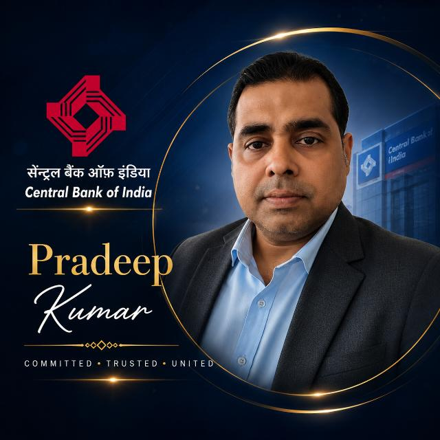

Professional profile
Currently associated with Central Bank of India, with a career that includes managerial responsibilities and work in the banking and financial-services ecosystem.
Banking professional with experience across financial services, customer relationships and entrepreneurship development. Committed to service, learning and creating opportunities through skill development.

My professional journey spans banking, customer relationships, financial advisory and tax-return preparation. I value responsible service, practical learning and helping people move forward with confidence.
Currently associated with Central Bank of India, with a career that includes managerial responsibilities and work in the banking and financial-services ecosystem.
Director, Cent RSETI Dhule — supporting skill development, entrepreneurship training and livelihood-oriented initiatives through the Rural Self Employment Training Institute.
A career progression across banking and financial services.
Banking career spanning managerial service and a current assignment in entrepreneurship development.
Banking operations and customer-focused financial services.
Customer relationship and service experience in the banking sector.
Experience in financial advisory services.
Experience in tax return preparation.
My current work at Cent RSETI Dhule is focused on enabling aspiring entrepreneurs through structured training and support for self-employment.
Supporting training initiatives that help participants build practical skills and prepare for self-employment and small-enterprise activities.
Working with stakeholders and the banking ecosystem to support training delivery, guidance and follow-up for livelihood-oriented initiatives.
This section is reserved for verified academic qualifications, banking certifications and professional training.
Please provide your degree, institution, year of completion and professional certifications (for example, JAIIB / CAIIB if you wish them displayed). No qualification has been assumed or published without confirmation.
A space to highlight verified milestones from your banking career and work in entrepreneurship development.
Selected work outcomes, targets, projects and institutional contributions can be featured here once details are confirmed.
Awards, appreciation letters, certificates and recognitions can be added with their year and issuing institution.
Photographs from training programmes, institutional events and professional milestones can make this profile more personal and informative.
No event photographs have been added yet. Share selected photos and short captions to create a clean, organised gallery.
People-oriented work that connects financial services with opportunity.
Building trust through clear communication, responsible banking and service-oriented work.
Encouraging aspiring entrepreneurs through training, guidance and livelihood initiatives.
Contributing to practical skills, self-employment and inclusive local development.
A simple set of values that shape my approach to professional service.
For professional communication, you can reach me through the details and social profiles below.
This is a personal professional profile. Views expressed here, if any, are personal and do not represent the official position of any organization. Please verify all career details before publication.